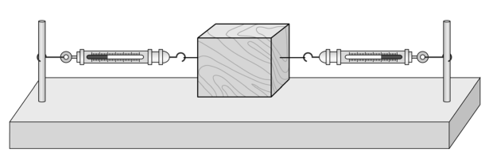
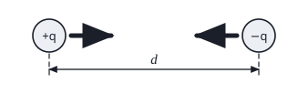
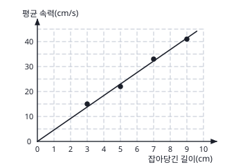

물리교육론 객관식 3문항 — 개념 변화 수업·귀추적 사고·탐구 자료 해석Conceptual change · abductive reasoning · interpolation, data transformation, hasty generalization
2013학년도 중등교사 임용시험 물리 1차(객관식) 10~12번 — 물리교육론 문항 묶음. 각 문항에서 알맞은 답을 고르시오.
- 고등학생은 ‘과학자는 어떻게 생각하는가’로 읽자: 귀납 = 여러 번 관찰해서 규칙 찾기, 연역 = 법칙에서 결과 예측, 귀추 = 비슷한 다른 현상에서 설명을 빌려 와 가설 세우기.
- 그래프 그리기는 표의 자료를 다른 모양으로 바꾸는 것(자료 변환). 측정한 범위 안을 예상하면 내삽, 밖을 예상하면 외삽.
다음은 힘에 대한 오개념을 가지고 있는 학생들을 대상으로 하는 개념 변화 수업에서 주요 단계별 교사의 활동을 나타낸 것이다.
[단계 1] 그림과 같이 용수철저울이 양쪽에 연결되어 있고, 나무 도막은 정지해 있다. 양쪽의 용수철저울 부분을 천으로 가려 나무 도막만 보이게 한 상태에서, 나무 도막에 힘이 작용하는지에 대한 학생들의 생각을 말하게 한다.

[단계 2] 가렸던 천을 치워 용수철저울이 보이게 하고 용수철저울의 눈금을 읽게 하여 실제로 힘이 작용하고 있음을 알게 한다.
[단계 3] 합력이 0이 되어 나무 도막이 움직이지 않음을 설명하고 힘의 평형 개념을 도입한다.
[단계 4] 줄다리기 상황에서 힘의 평형을 어떻게 설명할 수 있는지 질문한다.
이에 대한 설명으로 옳은 것만을 <보기>에서 있는 대로 고른 것은?
- ㄱ. [단계 1]에서 ‘정지해 있는 물체에는 힘이 작용하지 않는다.’는 학생의 생각은 이 수업에서 변화시키려는 오개념에 해당한다.
- ㄴ. [단계 2]에서는 학생들의 인지적 갈등을 일으키려는 의도가 있다.
- ㄷ. [단계 4]에서는 학생이 새롭게 획득한 개념을 적용하는 기회를 제공하고 있다.
- 개념 변화 수업의 흐름: 생각 드러내기 → 갈등 → 새 개념 → 적용.
- 천을 치웠을 때 학생의 예상(힘 없음)과 관찰(눈금이 있음)이 부딪힌다.
다음은 ‘뉴턴의 중력 법칙’을 공부한 학생이 아직 배우지 않은 ‘쿨롱 법칙’에 관한 문제와 답을 보고 풀이 과정에 관한 자신의 생각을 교사에게 설명한 것이다.
[문제] 아래 그림과 같이 거리 \(d=5.3\times10^{-11}\) m만큼 떨어져 있고, 전하량이 각각 \(+q\), \(-q\)인 두 전하 사이에 작용하는 힘의 크기는 \(8.4\times10^{-8}\) N이다. 거리가 2배가 된다면 이 두 전하 사이에 작용하는 힘의 크기는 얼마인가?

[답] \(2.1\times10^{-8}\) N
[학생의 생각] 이 문제와 답을 보면 두 전하 사이의 거리가 2배가 되면 그 힘의 크기는 \(\tfrac14\)배가 되네요. 여기서 힘이 작용하는 상황을 볼 때, 중력 법칙이 적용되는 상황과 유사해요. 두 전하 사이에 작용하는 힘의 크기가 거리의 제곱에 반비례하면 거리가 2배가 될 때 힘의 크기는 \(\tfrac14\)배가 되잖아요. 그러므로 두 전하 사이에 거리의 제곱에 반비례하는 힘이 작용한다고 볼 수 있어요.
이 학생이 사용한 과학적 사고로 다음 중 가장 적절한 것은?
- 학생은 사례를 많이 모아 일반화했는가, 법칙에서 결론을 끌어냈는가, 아니면 ‘이 결과를 설명할 수 있는 법칙’을 다른 현상(중력)에서 빌려 왔는가?
다음은 학생의 탐구 사례이다.
어떤 학생이 용수철을 더 많이 당겼다 놓으면 더 빨리 움직이는 것을 보고 ‘혹시 제자리로 되돌아가는 동안의 평균 속력이 잡아당긴 길이에 비례하는 것이 아닐까?’라고 추측하였다. 이 학생은 자신의 생각을 과학적으로 확인하려고 실험을 하였다. 용수철의 길이를 달리하면서 잡아당겼다 놓았을 때 원래의 길이로 되돌아가는 시간을 측정해 얻은 자료를 이용하여 다음의 표와 그래프를 작성하였다.
| 잡아당긴 길이(cm) | 3.0 | 5.0 | 7.0 | 9.0 |
|---|---|---|---|---|
| 시간(s) | 0.20 | 0.23 | 0.21 | 0.22 |
| 평균 속력(cm/s) | 15 | 22 | 33 | 41 |

이 학생의 탐구에 대한 설명으로 옳은 것만을 <보기>에서 있는 대로 고른 것은?
- ㄱ. 잡아당긴 용수철의 길이가 4.0 cm일 때의 평균 속력을 내삽(interpolation)에 의해 예상(prediction)할 수 있다.
- ㄴ. ‘잡아당긴 길이에 따른 평균 속력’ 그래프를 그린 것은 자료 변환에 해당한다.
- ㄷ. 이 학생이 그래프를 해석하여 ‘모든 용수철에서 제자리로 되돌아가는 동안의 평균 속력은 잡아당긴 길이에 비례한다.’고 결론을 내린다면 성급한 일반화에 해당한다.
- 4.0 cm는 측정 범위(3.0~9.0 cm) 안인가 밖인가?
- 표 → 그래프는 자료의 형태를 바꾼 것.
- 용수철 하나로 얻은 결과를 ‘모든 용수철’로 넓혀도 되는가?